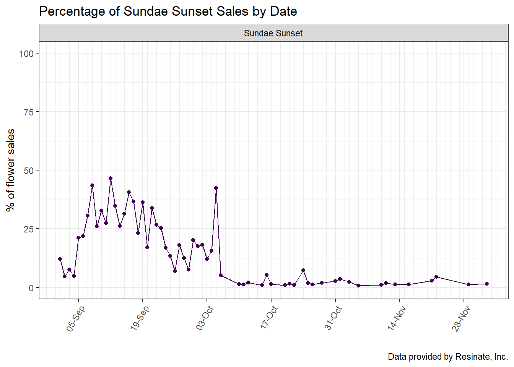

Code
library(tidyverse)
library(dplyr)
library(readr)
library(readxl)
library(lubridate)
library(viridis)
knitr::opts_chunk$set(echo = TRUE)library(tidyverse)
library(dplyr)
library(readr)
library(readxl)
library(lubridate)
library(viridis)
knitr::opts_chunk$set(echo = TRUE)Throughout the fall of 2022, the cannabis industry has been going through drastic market changes. With the rise of inflation, and an over saturated market, the cost of a pound of flower(bud) has decreased drastically. This data comes from a mid level adult recreational dispensary that is in a community of nearly 12 other dispensaries with similar product and clientele. There are three months worth of transaction data from the months of September, October, November and the beginning of December. Promotional items, sales, and deals have been a theme of many dispensaries in the Pioneer Valley and this dispensary has not been excluded from that.
The transaction data contains cumulatively about 36,000 transactions over the course of 3 months. Each transaction contains information for analyzing sales, and for the purposes of this document, the flower promotional sales. These transaction are inventory based, meaning that each product sold is one observation.
Were fall flower promotions effective?:
Was the most drastic promotion effective?
Are the strains still popular outside of the promotional window?
Each of the 3 months of transactions were read in similarly with unused columns deleted, and the rest renamed with more functional naming conventions. This data was of separate inventory transactions, there needed to be a full join to include all observations (transactions). There are several muated columns that were necessary in the overall analysis of the data.
#September transactions read in
transactions_sept_orig <- read_excel("_data/Inventory Transactions Sept_2022.xlsx",
skip = 5,
col_names = c("pos_id","product","delete","patient_name","transaction_date","qty_sold","daily_allottment_oz","weight_grams","cost","price","owner_name","owner_location","vendor","sold_by","receipt_no","delete","delete","delete","delete","delete"))%>%
filter(sold_by != "Michaela Bowen")%>%
select(!contains("delete"))
#October transactions read in
transactions_oct_orig <- read_excel("_data/Inventory Transactions Oct_2022.xlsx",
skip = 5,
col_names = c("pos_id","product","delete","patient_name","transaction_date","qty_sold","daily_allottment_oz","weight_grams","cost","price","owner_name","owner_location","vendor","sold_by","receipt_no","delete","delete","delete","delete","delete"))%>%
filter(sold_by != "Michaela Bowen")%>%
select(!contains("delete"))
#November transactions read in
transactions_nov_orig <- read_excel("_data/Inventory Transactions Nov_Current_2022.xlsx",
skip = 5,
col_names = c("pos_id","product","delete","patient_name","transaction_date","qty_sold","daily_allottment_oz","weight_grams","cost","price","owner_name","owner_location","vendor","sold_by","receipt_no","delete","delete","delete","delete","delete"))%>%
filter(sold_by != "Michaela Bowen")%>%
select(!contains("delete"))
#joint all three dataframes of transactions, also uniting common columns
transactions_fall <- full_join(transactions_sept_orig,transactions_oct_orig, by = 'transaction_date')%>%
full_join(.,transactions_nov_orig)%>%
unite("product", c(product, product.x, product.y), na.rm = TRUE)%>%
unite("pos_id", c(pos_id, pos_id.x, pos_id.y), na.rm = TRUE)%>%
unite("patient_name", c(patient_name, patient_name.x, patient_name.y), na.rm = TRUE)%>%
unite("qty_sold", c(qty_sold, qty_sold.x, qty_sold.y), na.rm = TRUE)%>%
unite("daily_allottment_oz", c(daily_allottment_oz, daily_allottment_oz.x, daily_allottment_oz.y), na.rm = TRUE)%>%
unite("weight_grams", c(weight_grams, weight_grams.x, weight_grams.y), na.rm = TRUE)%>%
unite("cost", c(cost, cost.x, cost.y), na.rm = TRUE)%>%
unite("price", c(price, price.x, price.y), na.rm = TRUE)%>%
unite("owner_name", c(owner_name, owner_name.x, owner_name.y), na.rm = TRUE)%>%
unite("owner_location", c(owner_location, owner_location.x, owner_location.y), na.rm = TRUE)%>%
unite("vendor", c(vendor, vendor.x, vendor.y), na.rm = TRUE)%>%
unite("sold_by", c(sold_by, sold_by.x, sold_by.y), na.rm = TRUE)%>%
unite("receipt_no", c(receipt_no, receipt_no.x, receipt_no.y), na.rm = TRUE)
#mutating necessary columns
transactions_fall <- transactions_fall%>%
#creating date, day, hour, minute, second, columns
mutate(
date = as.Date(transaction_date),
day = day(transaction_date),
hour = hour(transaction_date),
minute = minute(transaction_date),
second = second(transaction_date))%>%
mutate(
format_date = format(date, "%m/%d/%Y"),
format_hour = paste(hour, minute, second, sep = ":")
)%>%
#pulling the category abbreviation to determine category and create a category column
mutate(
category = substr(product,1,3),
)%>%
#changing the abbreviations into full category names
mutate(
category_names = case_when(
category == "FLO" | category == "Flo" ~ "Flower",
category == "PRJ" & weight_grams == 0.5 ~ "Joint 0.5g",
category == "PRJ" & weight_grams == 1 ~ "Joint 1g",
category == "PRJ" & weight_grams == 2.5 ~ "Joint 0.5g 5pk",
category == "PRJ" ~ "Other Joint",
category == "EDI" ~ "Edible",
category == "CON" | category == "Con" | category == "MIP" ~ "Concentrate",
category == "VAP" | category == "Vap" ~ "Vaporizer",
category == "ACC" | category == "Pax" | category == "PAX" | category == "Hig" | category == "Bov" ~ "Accessories",
category == "CLO" | category == "Res" ~ "Clothing",
category == "HTC" ~ "ignore",
category == "SAM" ~ "ignore",
category == "TOP" ~ "Topical",
category == "REW" ~ "ignore")
)%>%
#created a logical variable to determine if flower was in house, or 3rd party
mutate(
house_product = case_when(
vendor == "Resinate, Inc." ~ TRUE,
vendor != "Resinate, Inc." ~ FALSE
)
)Given that the price of the pound of flower is down, lowering the price of the 8th, as well as promoting different strains is necessary to compete within the market. In order to do that, Flower transactions need to be isolated. There are several mutated variables that are necessary in the flower analysis included, total product sold by date, products sold by date and strain, and percent of products sold by date and strain.
#create flower transactions only dataframe
transactions_flower <- transactions_fall%>%
filter(category == "FLO")%>%
#create strain variable
mutate(
weight_grams = as.double(weight_grams),
strain = case_when(
grepl("Flower", product) & (weight_grams == 1 | weight_grams == 14) ~ (str_extract(product,"(?<=Flower ).+(?= 1)" )),
grepl("Flower", product) & (weight_grams == 3.5)~ (str_extract(product,"(?<=Flower ).+(?= 3.)" )),
grepl("Material", product) & (weight_grams == 7)~ (str_extract(product,"(?<=Material ).+(?= 7)" )),
grepl("Shake", product) & (weight_grams == 7) ~ (str_extract(product,"(?<=Shake ).+(?= 7)" )),
grepl("Shake", product) & (weight_grams == 1 | weight_grams == 14) ~ (str_extract(product,"(?<=Shake ).+(?= 1)" )),
grepl("Popcorn", product) ~ (str_extract(product,"(?<=Popcorn ).+(?= 3.)" )),
grepl("Collective", product) ~ (str_extract(product,"(?<=Collective ).+(?= 3.)" ))
)
)%>%
#create total product sold by strain and date
group_by(strain,date)%>%
mutate(sold_by_strain = sum(as.double(qty_sold)),
)%>%
#create total product sold by date
group_by(date)%>%
mutate(sold_by_date = sum(as.double(qty_sold)),
)%>%
mutate(percent_sold = 100*(sold_by_strain/sold_by_date),
)percent_strain_day <- transactions_flower%>%
filter(house_product == TRUE)%>%
arrange(date, -percent_sold)%>%
distinct(strain, .keep_all = TRUE)%>%
ggplot(aes(x = date, y = percent_sold, group = strain, fill = strain)) +
geom_area() +
scale_fill_viridis(discrete = TRUE) +
labs(
title = "% Sold by Strain",
caption = "Data provided by Resinate, Inc."
)+
xlab(" ") +
ylab("% of flower sales") +
theme_bw() +
theme(
legend.position="none",
panel.spacing = unit(0.2, "lines"),
panel.spacing.x = unit(.5, "lines"),
strip.text.x = element_text(size = 8),
plot.title = element_text(size=14)
) +
scale_x_date(
date_breaks = "1 month",
date_labels = "%b"
) +
facet_wrap(~strain)
percent_strain_day
When referring to the Biweekly promotions it is clear that the promotions were effective as each strain has peaks related to the weeks of their promotions. The steepest promotions of the fall were for the month of November from 11/2 - 11/17, where four strains (Truthband, Lemon 18, Cappachino and Jigglers), were promoted for the price of $18.
best_promo <- transactions_flower%>%
filter(strain == c("Lemon 18", "Truthband", "Cappachino", "Jigglers"))%>%
ggplot(aes(x = date, y = percent_sold, group = strain, color = strain)) +
geom_point(size = 1.5) +
geom_line() +
scale_x_date(
date_labels = "%d-%b",
date_breaks = "2 weeks",
date_minor_breaks = "days"
) +
scale_color_manual(values = c("#440154FF", "#31688EFF", "#35B779FF", "#FDE725FF")) +
labs(
title = "Percentage of Strain Sales by Date",
subtitle = "$18 Eighths",
caption = "Data provided by Resinate, Inc.")+
xlab(" ") +
ylab("% of flower sales") +
ylim(0,100) +
theme_bw() +
theme(
legend.position = "none",
axis.text.x = element_text(angle = 60, hjust = 1)
) +
facet_wrap(~strain)
best_promo
sundae_sunset_transactions <- transactions_flower%>%
filter(strain == "Sundae Sunset")%>%
ggplot(aes(x = date, y = percent_sold, group = strain, color = strain)) +
geom_point(size = 1.5) +
geom_line() +
scale_x_date(
date_labels = "%d-%b",
date_breaks = "2 weeks",
date_minor_breaks = "days"
) +
scale_color_manual(values = "#440154FF") +
labs(
title = "Percentage of Sundae Sunset Sales by Date",
caption = "Data provided by Resinate, Inc.")+
xlab(" ") +
ylab("% of flower sales") +
ylim(0,100) +
theme_bw() +
theme(
legend.position = "none",
axis.text.x = element_text(angle = 60, hjust = 1)
) +
facet_wrap(~strain)
sundae_sunset_transactions
Within a two week promotional period, each category has one or two deals or promotional items. Typically, the flower category will always contain one strain priced between $18-$35, which tend to be the most popular for the time they are on sale.
9/8 - 9/21
9/22 - 10/5
Phone Home, Jigglers & Sundae Sunset $20
Cappachino $35
10/6 - 10/19
Phone Home, Lava Cake $20
Cappachino $35
10/20 - 11/02
Phone Home, Lava Cake $20
Cappachino $30
11/03 - 11/17
Lemon 18, Truthband $18
Cappachino $25
11/18 - 11/30
Jigglers, Cappachino $18
Truthband $25
12/1 - 12/14
El Chapo $20
Cappachino $25